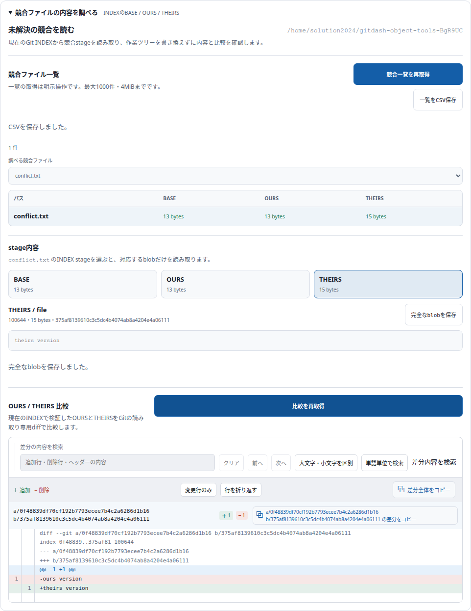
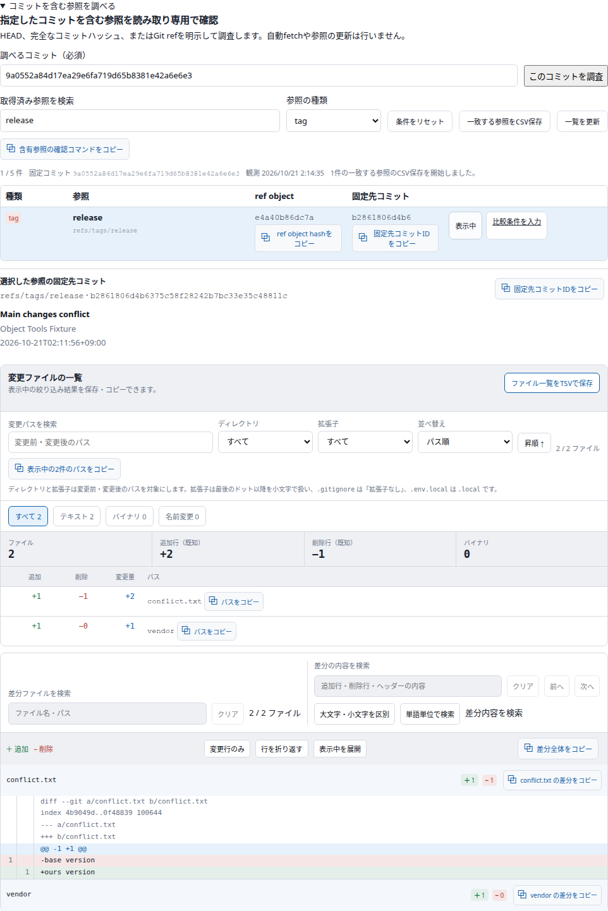
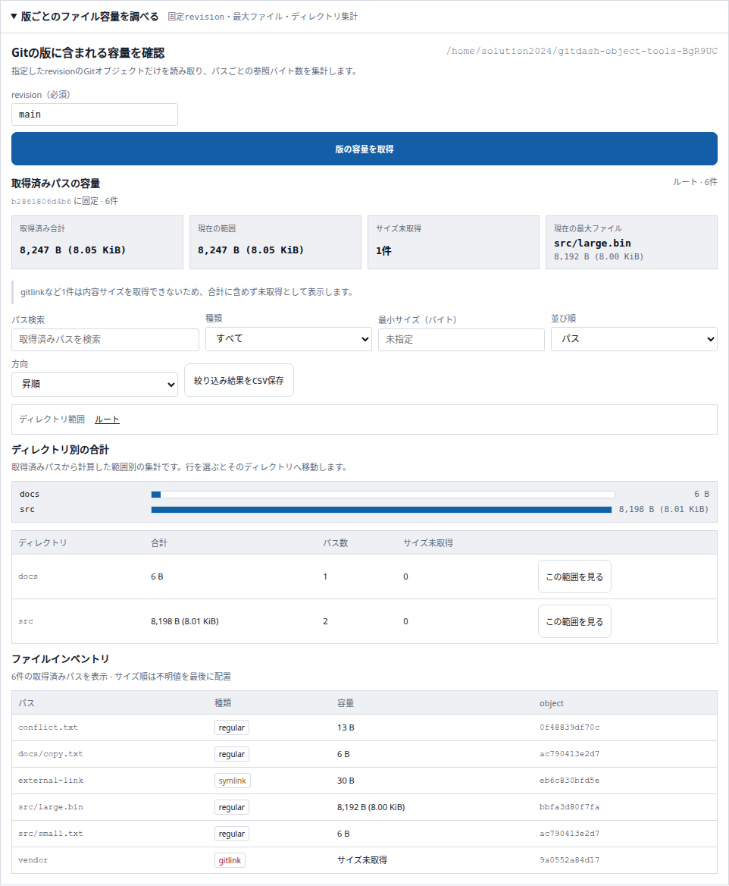

2026年10月21日。「ファイル」から競合の各段階と版ごとの容量を確認し、「プロジェクト情報」からコミットを含む参照を調べられるようにしました。
30 + 14 × 5 = 100点
指定の加点基準による点数です。客観的な品質保証とは区別します。
| 領域 | 追加機能と価値 | 加点 |
|---|---|---|
| 競合調査 | 未解決INDEXのファイル一覧と各stageの存在・型・hash・サイズを確認する | +5 |
| 競合調査 | BASE・OURS・THEIRSを独立して選び、各段階の内容を確認する | +5 |
| 競合調査 | 検証済みのOURSとTHEIRSの差分を読み取り専用で比較する | +5 |
| 競合調査 | 完全に取得できた通常blobを元のバイト列のまま保存する | +5 |
| 競合調査 | 競合ファイルと各stageの情報をCSV保存する | +5 |
| 含有参照 | 任意のコミットを含むローカル・リモート追跡・タグ参照を調べる | +5 |
| 含有参照 | 取得済み参照を名前と種類で絞り込む | +5 |
| 含有参照 | 選択した参照の固定先コミット詳細を確認する | +5 |
| 含有参照 | 調査コミットと固定先を既存比較画面の入力へ引き継ぐ | +5 |
| 含有参照 | 一致する参照と固定hashをCSV保存する | +5 |
| 容量調査 | 指定した版のパス別Gitオブジェクトサイズと最大ファイルを確認する | +5 |
| 容量調査 | ディレクトリ別集計から範囲を掘り下げ、パンくずで戻る | +5 |
| 容量調査 | 取得済みパスを種類・最小バイト数・パスで絞り込み並び替える | +5 |
| 容量調査 | 絞り込んだファイル容量一覧をCSV保存する | +5 |
Frontend233件・Backend300件成功。本番ビルド成功。未解決P1なし。実Git/APIとブラウザーで各操作、保存内容、比較の未自動実行、入力変更後の遅延応答破棄を確認しました。1440px・390pxでページ横はみ出しとpage errorなし。
mainへコミット・GitHubへpushし、既存Compose wrapperで反映・再起動。アプリを開く。
競合を解消する操作は行いません。blob完全保存は1MiBまで。含有参照は取得時点のローカル情報です。容量はパス単位のGitオブジェクトサイズで、ディスクや圧縮サイズではありません。未知のサイズと部分取得を明示します。


